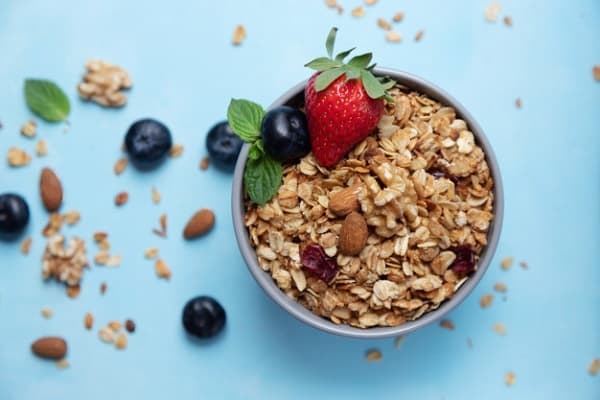

Muesli

Description
Simply put this is the best breakfast in the world. It ticks other important boxes that a meal should: Vegan, Quick, Filling & Healthy(ish)
Ingredients
- Muesli
- Vegan milk - Oat, Soy, Rice & Coconut are all good options
- Fruit (Optional)
Instructions
- Pour Muesli into a bowl
- Add your milk of choice
- (Optional) Add fruit
Return to main menu